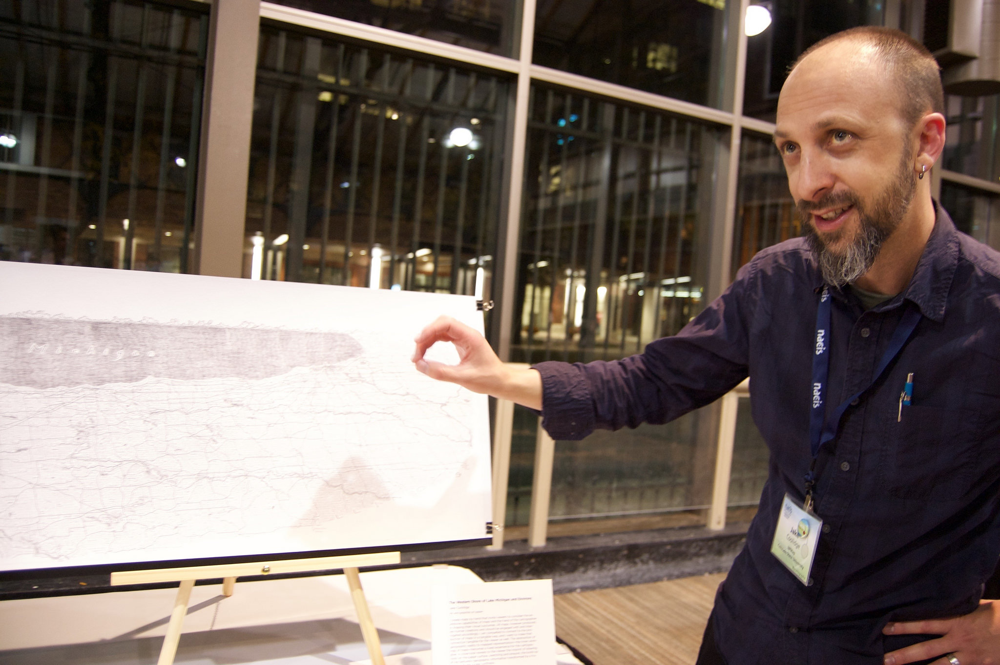

Jake Coolidge Cartography
About Jake Coolidge

Discussing my map, "The Western Shore of Lake Michigan and Environs", at the NACIS 2015 Map Gallery and Tangible Map Exhibit in Minneapolis. Photo by Dylan Moriarty, 2015.
I'm a cartographer, geographer, and artist based in the San Francisco Bay Area. I'm currently a research associate with Colorado State University, embedded as a cartographer for the National Park Service. This site houses much of the work I have developed over the previous years as a freelance cartographer, during which time I specialized in guide maps, navigational maps, thematic maps for scholarly publications, and large-format hand-drawn maps. Though no longer freelancing, I will continue to exhibit my side projects and cartographic investigations here, as well as some of my NPS-related work. I also completed the University of Kentucky's online New Maps Plus graduate certificate program in digital mapping.
Reach out to me on LinkedIn!
Publications featuring my work
- Stalking the Atomic City: Life Among the Decadent and the Depraved of Chornobyl by Markiyan Kamysh, translated by Hanna Leliv and Reilly Costigan-Humes, published by Astra House, 2022.
- Castaway Mountain by Saumya Roy, published by Astra House, 2021.
- Mapping America's National Parks: Preserving our Natural and Cultural Treasures from the National Park Service, published by Esri Press, 2021. I created the National Park Service system map that highlights the various parks featured in the volume.
- Counterpoints: A San Francisco Bay Area Atlas of Displacement and Resistance from The Anti-Eviction Mapping Project, published by PM Press, 2021. A collection of essays, the fourth version of my BART map is featured in "Transport in History: What Is, Was, and Wasn't" by John Stehlin.
- Hydraulic City by Nikhil Anand, published by Duke University Press, 2017.
- Watering the Revolution by Mikael Wolfe, published by Duke University Press, 2017.
- Elsewhere: A Journal of Place Issue 4 features an interview of Jake Coolidge by Julia Stone, and includes excerpts of several maps by Jake Coolidge and the NPMap team.
- "The Tangible Maps Exhibit" by Matt Dooley, Jake Coolidge, and Caroline Rose. Cartographic Perspectives no. 82, 2015. The journal cover features an excerpt of "The Western Shore of Lake Michigan and Environs".
- A Nervous State by Nancy Rose Hunt, published by Duke University Press, 2015.
- Tropical Freedom: Climate, Settler Colonialism, and Black Exclusion in the Age of Emancipation by Ikuko Asaka, published by Duke University Press, 2017.
- Wired. Two slides depicting my map of the Columbia River Watershed are included in Greg Miller's write-up of the 2014 Atlas of Design, January 13, 2015.
- Tech Crunch. A map I made for Michael Levin and the Rebooting History Project depicting East Palo Alto's location in relation to the Facebook and Google campuses appears in "East of Palo Alto's Eden" by Kim-Mai Cutler, Jan. 10, 2015.
- The Stanford Literary Lab Pamphlets nos. 5 through 16. Layout and graphics editing, 2014–2018.
- The Atlas of Design vol. 2, edited by Daniel Huffman, Samuel V. Matthews, and Martin E. Elmer. North American Cartographic Information Society, 2014. Read more here.
- Co-authored "Conservation Histories of California" by Maria J. Santos et al. Published online in 2014 by the Spatial History Project; initially published as part of the CESTA Anthology 2013.
- Redemption Songs by Lea VanderVelde, 2014 Oxford University Press. Read more here.
- Boom: A Journal of California. My map "Regional Rapid Transit for the Bay Area" appears in "Mapping our Disconnect" by Kristin Miller, Vol. 4 Issue 2, Summer 2014.
- The I[bike]Oakland Bikeways Map. Over 90,000 copies have been printed and distributed throughout Oakland over the years. Read more here.
- He Who Laughs Last, a Cthulhu Dark scenario by Dave Sokolowski. Read more here.
- The New York Times. Contributed geospatial data for "An Olympics in the Shadow of a War Zone" by Steven Lee Myers, Feb. 5, 2014. This data initially appeared in a map produced for the website GeoCurrents.
- Wired Science. "13 Fake Transit Systems We Wish Existed" by Adam Mann, Jan. 28, 2014, also featured "Regional Rapid Transit for the Bay Area".
- Wilderness by Debra Bloomfield, 2014 University of New Mexico Press.
- The Stanford University CESTA Anthology 2013. I served as editor, designer, and graphic/cartographic editor.
- Bay Area Automated Mapping Journal. "Excerpt from A Hand-Drawn Map of California" vol.7, issue 1, Spring 2013 (PDF). See the full map here.
- Co-authored "The Demic Atlas Project: A Non-State-Based Approach to Mapping Global Economic and Social Development" with Anne Fredell and Martin Lewis, August 2011. I served as cartographer and developed interactivity using Flash.
- No Little Plans: Envisioning the Bay Area Rapid Transit System and the Renewal of Rapid Transit in the United States. Master's thesis, Spring 2011. Free download available via the San Jose Library catalog.
Group exhibitions I've participated in
- Oct. 10–12, 2017: North American Cartographic Information Society Map Gallery, Montréal, Quebec. Exhibited "Mount Rainier", printed from an etched copper plate.
- 2016: The Columbia River Watershed Tour. Numerous cities in the Pacific Northwest. Curated by Teresa Marshall. Exhibiting "The Columbia River Watershed."
- Oct. 14–16, 2015: NACIS 2015 Tangible Map Exhibit. The Depot Pavilion, Minneapolis, Minnesota. Curated by Matt Dooley, Caroline Rose, and Jake Coolidge. Exhibited "The Western Shore of Lake Michigan and Environs".
- Jan. 20–30, 2015: Making Terrain: Shaded Relief Narratives. The Art & Design Gallery, University of Kansas. Curated by Travis White. Exhibited "A Hand-Drawn Map of California".
- June 2014: Engaging Ensor: Interactive Print Project, Getty Museum, Los Angeles, curated by the Mobile Arts Platform. Contributed linocut, "Cartographer/Plague Doctor".
- Oct. 2012: North American Cartographic Information Society Map Gallery, Portland, OR. Exhibited "A Hand-Drawn Map of California".
Public speaking
- October 2024. North American Cartographic Information Society, Tacoma, WA: Making maps more accessible at the U.S. National Park Service.
- June 2024. California Map Society, David Rumsey Map Center, Stanford, CA: Making web maps to inform and inspire visitor experiences at the National Park Service.
- October 2019. North American Cartographic Information Society, Tacoma, WA: Web Mapping at the US National Park Service: Park Tiles version 4.
- October 2018. North American Cartographic Information Society, Norfolk, VA: Beneath the Surface: Mapping with Intaglio. See more here.
- April 2018. Visiting cartographer at the Univ. of Oklahoma's Dept. of Geography and Environmental Sustainability: (Slightly) off the beaten path: the design of a cartographic career.
- January 2018. National Park Service Symposium at Colorado State University.
- June 2017. International Map Industry Association Meet-up, University of Colorado, Denver: Recent developments in mobile app cartography for the NPS. More info here.
- Oct. 2016. North American Cartographic Information Society, Colorado Springs, CO: Mobile App Cartography for the US National Park Service. Abstract available here.
- Nov. 2015. GIS Day, Colorado State University, Fort Collins, CO: NPMap with Taylor Long. Slides available here.
- Oct. 2015. North American Cartographic Information Society, Minneapolis, MN: Every Pixel Counts: Web Map Symbols for the National Park Service. Slides available here.
- Jan. 2015. American Library Association Midwinter Meeting, Chicago, IL: Graceland Cemetery Chicago: Architecture Meets History Meets Local Resource with Joe Collier.
- Nov. 2014. Chicago Map Society, Chicago, IL: Past Practices, Contemporary Applications: A Digital Cartographer's Experiments in Hand-Drawn Mapping
- Oct. 2014. North American Cartographic Information Society, Pittsburgh, PA: Past Practices, Contemporary Applications. Slides available here.
- Mar. 2014. Chicago GIS Network, Chicago, IL: Mapping Historic City Directory Locations in 1840s St. Louis
- Apr. 2013. Association of American Geographers, Los Angeles, CA: A Hand-Drawn Map of California
- Sept. 2012. HUMlab, Umeå University: Methods for Spatial History
- Oct. 2011. North American Cartographic Information Society, Madison, WI: No Little Plans: Exploring Rapid Transit Development in North America Through the Lens of Plan Design. Slides available here
- Apr. 2011. Association of American Geographers, Seattle, WA: No Little Plans: Envisioning the Bay Area Rapid Transit System and the Renewal of Rapid Transit in the United States
- Mar. 2009. Association of American Geographers, Las Vegas, NV: Arthur H. Robinson: A Look at a Career
Cartographic/design skills
- Mapbox Studio, Mapbox Studio Classic, CartoCSS, TileMill, JOSM
- QGIS, PostGIS/PostgreSQL, ArcGIS (Desktop, Pro, Online), CartoDB, Fulcrum
- Adobe Creative Suite (Illustrator, Photoshop, InDesign, Fireworks), Avenza MAPublisher, Sketch
- HTML, CSS, JS (especially Leaflet and jQuery), Markdown, a bit of Python
- also: GitHub, Team Foundation Server, Jekyll, MS Office, Tableau, Gephi, Google Refine/Open Refine, Google Drive, Apple iWork, Mac OS X, MS Windows
Biographical notes
- 2015–present: Research associate at Colorado State University, embedded as a cartographer at the National Park Service, Resource Information Services Division
- 2017–2018: Graduate Certificate in Digital Mapping from New Maps Plus/the Univ. of Kentucky Geography Dept.
- 2013–2014: Freelance cartographer/designer in Chicago, IL
- 2011–2013: Geospatial Historian at the Spatial History Project at Stanford University
- 2011: M.A. in Geography at San José State University. Access my Master's thesis, No Little Plans: envisioning the Bay Area Rapid Transit system and the renewal of rapid transit in the United States here (free download via the SJSU Library). My Wordpress blog captures some of my art/design projects and graduate student research from 2009 to 2013.
- 2008–2010: bicycle facilities planning intern at the City of Oakland
- 2002–2010: bass guitarist for a few of seldom-heard projects. In 2007 I was a guest performer on the show Firebunker on 89.7FM KFJC, hosted by the late, great Cy Thoth. I also collaborated with artist Peter Foucault from 2007 to 2010. More info about my recordings and performances can be found here.
- 2001: B.F.A. in Studio Art (Printmaking) at the University of Washington
The long version
Before joining the NPMap team at the National Park Service, I was a freelance cartographer, designer, and GIS consultant in Chicago. Up until January 2013, I was the Geospatial Historian at the Spatial History Project at Stanford University, where I provided training in GIS and cartographic design and advised research projects in a lab environment. I completed a Master of Arts in Geography at San José State University, during which time I was a Bicycle and Pedestrian Facilities Planning Intern at the City of Oakland. My academic research interests focused on cartographic design and history. Maps, like written documents, are imperfect and subjective human creations; studying these visual documents can reveal the intentions and/or biases of the map authors and point to their reliability.
In my own cartographic work, I've explored how to incorporate the dimension of time in order to depict changes in geographic distributions, using both static multiples and animated presentations. I also have a keen interest in the process of abstraction and generalization that occurs in the cartographic design process, and have experienced it indirectly in my digital work, and tangibly in my hand-drawn maps. Each map project is an opportunity to explore cartographic design issues related to projection and areal extent, scale and generalization, text placement, symbolization of categories and quantitative data, among others. Cartographers are presented with an infinite number of design choices, and happily, the number of maps needed to help us understand our world is only increasing.
I see an opportunity with my mapmaking practice to engage viewers to consider the hand of the cartographer in shaping the visual outcome of maps and their expressive capabilities. Cartographic traditions and visual conventions are alternately embraced and subverted. I create maps by hand that are rich in minute detail and reward a viewer's extended study, while reframing a familiar place in a new light. Increasingly I see my mapmaking as a platform for investigation. I explore the human-altered landscape and how individual locations combine to form interconnected regions.
The long study of sources and field observations required for detailed maps creates an awareness of place. I use the mapmaking process to learn about the world we live in. It is a means of place-making—of forming images of our world in our minds. I seek to create alternative and complementary perspectives (images) of familiar places. To carefully compose a map of a place and speak truthfully to some aspect of its reality is to express a respect, a love, a hope for that place.